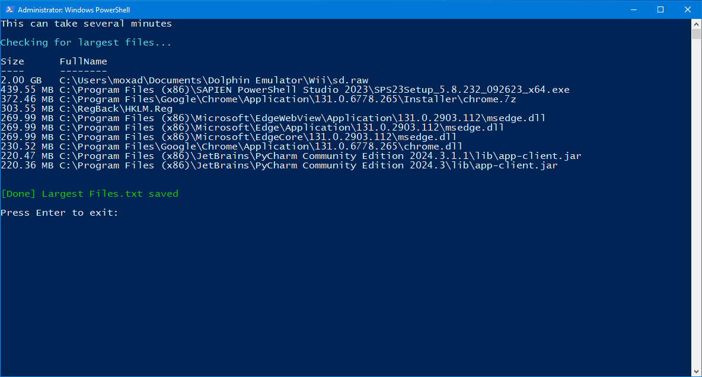

All drive-letter file-system drives
The scan is not limited to C:. Any mounted PowerShell FileSystem drive whose root matches a standard drive-letter path is included.
Windows Storage Utility
Largest Files is a free PowerShell utility that scans drive-letter file-system drives on a Windows PC, identifies the 10 largest files outside the Windows system folder, displays them in the console, and saves the results to a local text file.
Overview
The script asks PowerShell for mounted FileSystem drives and keeps drive roots that use standard Windows drive-letter paths such as C:\, D:\, and E:\. It then recursively enumerates files on those drives.
The scan is not limited to C:. Any mounted PowerShell FileSystem drive whose root matches a standard drive-letter path is included.
Each selected drive is searched recursively with Get-ChildItem -Recurse -File so files in nested folders are considered.
Files underneath the current %SystemRoot% path are filtered out. On a typical installation, this excludes files under C:\Windows.
The file enumeration uses -ErrorAction SilentlyContinue, so inaccessible folders or files are skipped rather than stopping the entire scan.
Ranking
After collecting the visible files from all selected drives, the script sorts them by byte length from largest to smallest and keeps the first 10 results.
A helper function formats each size as bytes, KB, MB, GB, or TB and rounds larger units to two decimal places.
Each result contains both the formatted file size and the file's complete path, making it easier to locate large storage consumers.
Output
The same top-10 result objects shown in the console are written to Largest Files.txt in the directory containing the PowerShell script.
The output is always named Largest Files.txt.
The script uses $PSScriptRoot, so when it is run normally from the extracted package, the text file is saved beside Largest Files.ps1.
The current script contains no upload, API, or web-request code. File paths and sizes remain in the local console and local text file.
The result file is written using ASCII encoding so it can be opened easily in Notepad or another text editor.
How It Works
-ExecutionPolicy Bypass and requests administrator elevation through UAC.Largest Files.txt beside the script.Transparency
The current script does not contain Remove-Item or other commands that delete the large files it finds.
It is an inventory tool only. Deciding whether a listed file is safe to remove is left to the user.
The Windows system directory is deliberately excluded, reducing system-file noise in the results.
The scan does not transmit filenames, file paths, or file sizes anywhere.
Screenshot

FAQ
No. It scans mounted PowerShell FileSystem drives that use standard drive-letter roots, so additional drives such as D: or E: can be included.
No. Files whose paths are underneath the current Windows system root are excluded.
No. The script only reports file size and path information.
As Largest Files.txt in the same folder as the PowerShell script.
It recursively walks the accessible files on every selected drive before sorting them, so systems with large drives or many files can take longer.
Folders that PowerShell cannot access are silently skipped, and files under the Windows system folder are intentionally excluded.